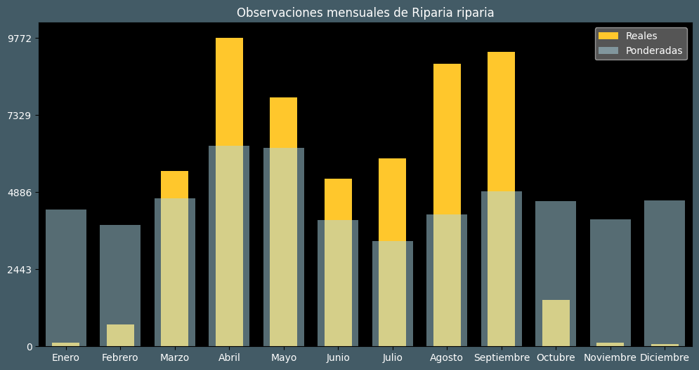

Observaciones por mes
Observations por hora

Categoría IUCN: ?
Género: Riparia
Familia: Hirundinidae
Orden: Passeriformes
Descubrimiento: Linnaeus (1758)
| Idioma | Nombre |
|---|---|
| Afrikaans (af) | Europese oewerswael |
| Arabic (ar) | خطاف الرمل |
| Belarusian (be) | Ластаўка-зямлянка |
| Bulgarian (bg) | Брегова лястовица |
| Catalan (ca) | Oreneta de ribera comuna |
| Chinese (zh) | 崖沙燕 |
| Chinese traditional (zh-TW) | 灰沙燕〔崖沙燕〕 |
| Croatian (hr) | Bregunica |
| Czech (cs) | Břehule říční |
| Danish (da) | Digesvale |
| Dutch (nl) | Oeverzwaluw |
| English (en) | Sand martin |
| Estonian (et) | Kaldapääsuke |
| Finnish (fi) | Törmäpääsky |
| French (fr) | Hirondelle de rivage |
| German (de) | Uferschwalbe |
| Greek (el) | Οχθοχελίδονο |
| Hebrew (he) | כוכית גדות |
| Hungarian (hu) | Partifecske |
| Icelandic (is) | Bakkasvala |
| Indonesian (id) | Layang-layang pasir |
| Italian (it) | Topino |
| Japanese (ja) | ショウドウツバメ |
| Korean (ko) | 갈색제비 |
| Latvian (lv) | Krastu čurkste |
| Lithuanian (lt) | Paprastoji urvinė kregždė |
| Maceodnian (mk) | Брегова ластовичка |
| Malayalam (ml) | മണൽ കത്രിക |
| North_sami (se) | Derpmoš |
| Norwegian (no) | Sandsvale |
| Persian (fa) | چلچله رودخانه ای |
| Polish (pl) | Brzegówka (zwyczajna) |
| Portuguese (pt) | Andorinha-das-barreiras-comum |
| Russian (ru) | Береговушка |
| Serbian (sr) | Bregunica |
| Slovak (sk) | Brehuľa hnedá |
| Spanish (es) | Avión zapador |
| Swedish (sv) | Backsvala |
| Thai (th) | นกนางแอ่นทรายสร้อยคอดำ |
| Turkish (tr) | Kum kırlangıcı |
| Ukrainian (uk) | Ластівка берегова |